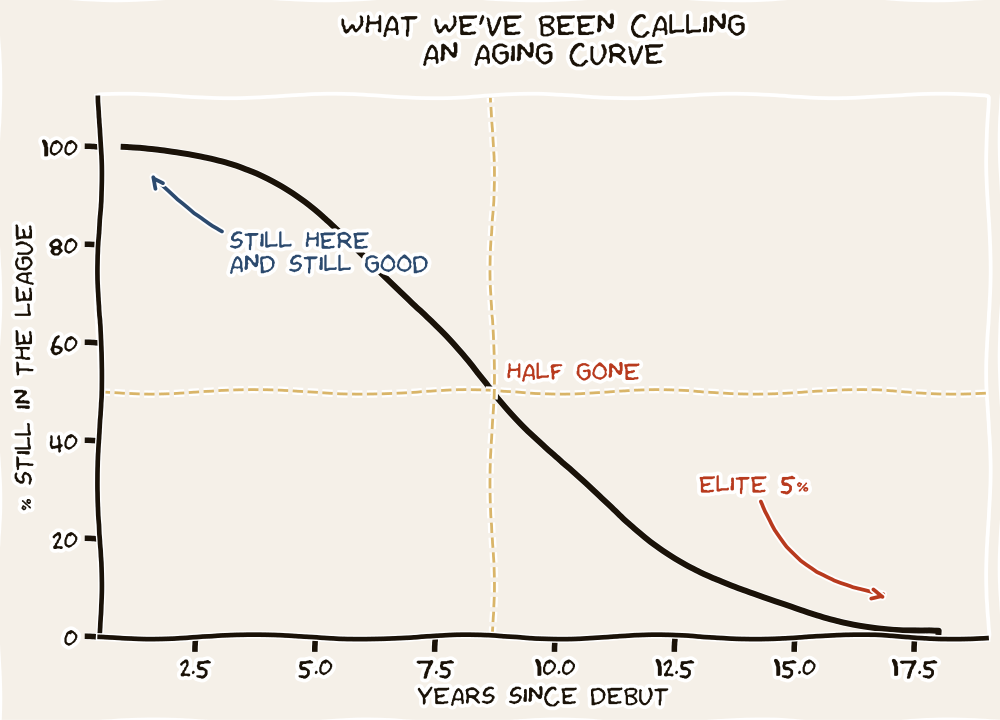

A Career Doesn't Decline. It Disappears.
Of the 401 first basemen who debuted in the major leagues between 1985 and 2025, half are out of the lineup by year five. Three in four are gone by year ten. The "aging curve" you have been reading about your whole life is a chart of the 17 percent of debutants who lasted long enough to be on it.

Manny Machado is fourteen years into a major league career and, for a few weeks this spring, his batting average ducked below .200. That dip is what prompted this series. The question was simple. Is he past his prime, or just slumping? And while we are at it — where, exactly, does Pete Alonso sit on the same kind of curve, seven years in?
The standard answer reaches for "aging curves" calibrated to chronological age. We are going to reach for something cleaner. The clock that matters for a ballplayer is not the one on his birth certificate. It is the one that starts ticking at his major league debut.
Why service years, not birthdays
A 30-year-old in his third major league season has a fundamentally different baseball body than a 30-year-old in his ninth. One has 1,200 professional at-bats on him. The other has 4,000, with the bone density and the swing wear that go with them. The user of a "career half-life" framework has to choose a clock that ticks at the right speed. Service years tick at the speed of major-league baseball: same level of competition, same travel, same workload bracket. They begin, for everyone, at debut.
Starting from debut also fixes a different problem. You cannot measure half-life from peak if you do not know when peak occurred. Peak is a retrospective verdict; no one knows in real time that they have hit it. Debut is a date on a card. Pick the knowable starting line. The rest of the framework follows.
The chart answers a single question. Of every player who took an MLB plate appearance at a given position between 1985 and 2025, what share was still in a major league lineup at each later year of service? Not a regular. Not a qualifier. Just in the league at all.
The shape is the same at every position. Decline starts immediately. By year three, roughly a third of every cohort is already out. By year five, half. By year ten, three quarters. By year fifteen, the curves are flush against the floor: four to nine percent of debutants are still drawing a paycheck. The horror of it is not the steepness; it is the absence of any flat stretch at the top.
If you read aging-curve literature anywhere — the kind that says "player production peaks at 27 and then declines two percent per year" — you are reading a chart drawn from the survivors. The flameouts who debuted at 23 and were back in Triple-A by 25 do not appear in those charts. They were never in the regression. The decline rate sounds civilized because the violent attrition was hidden upstream of the data.
What happens to the players who stay
Here is the counterintuitive finding. Among the players still standing at year thirteen, production has not just held steady — it has crept upward.
The median first baseman with 200 plate appearances or more at years 1–3 posts a .782 OPS. At years 7–9 the figure is .805. At years 13–15, still .790. At third base it climbs from .728 to .777 over the same span. At shortstop, .687 to .717. Position after position, the veteran's median sits a few points above the rookie's median, not below it.
This is not because baseball improves its players. It is because baseball is brutal. The players whose bats slowed down were not allowed to keep hitting in major-league lineups; they were sent down, released, retired. With each passing service year, the population of "still hitting" gets thinner and more talented. The median climbs not because anyone got better, but because everyone worse than the median was removed from the sample. Survivorship intensifies until the only players left are the ones who never needed an aging curve.
A career is not a slope. It is a steep escalator going down, and a survivors' lounge at the top.
The Half-Life FrameworkLiving cases: Alonso and Machado
Alonso enters his eighth major league season. Of the 401 first basemen who debuted in MLB since 1985, only about a third are still in the league at year eight. Among those who are, the median OPS in the years 7–9 window is .805. Alonso's 2025 mark of .871 is above the survivor median — and he beat the median rookie's mark by almost a hundred OPS points. He is not past his prime. By the data, he is sitting on it.
Machado is in his fifteenth season. Of the 429 third basemen who debuted in MLB since 1985, fewer than one in ten is still in the league at year fifteen. Among those who are, median OPS at years 13–15 is .777. Machado in 2025 was at .795 — on the right side of the survivor line, but with little margin. The spring slump is a story about a single month, against a tail population so small that any deeper dip will be hard to read against noise.
The point is not to forecast either man's next month. It is to give the conversation a coordinate system. "Past his prime" without a position curve is folk wisdom; with one, it is a check you can run on yourself.
The civic-mission note
This piece is, in a sense, a sequel to The Reader's Defense on survivorship bias. The aging-curve question is where survivorship lives. The grizzled veteran you see hitting .280 in his sixteenth season is not evidence that baseball ages gently. He is evidence of the players you do not see — the dozens from his draft class who were already cut.
When a fan, a manager, or a general manager argues that "veterans hold up," ask the second question: which veterans? The ones still here, or all the ones who debuted alongside them?
Two tools accompany this piece
Career Trajectories plots every one of the 7,300+ hitters and 5,600+ pitchers in this cohort as a faint line. Filter by debut tier — cup of coffee, partial, regular, qualifier — and watch the cliff change shape. Search any player to highlight them against the cloud.
Open Career Trajectories →The Half-Life Explorer sorts the same data into tables — survival rates, production percentiles, individual players. Useful for the position-by-position grid.
Open the Explorer →A word on what is coming
This is Part I. The framework. Parts II through IV will dig further:
Part II goes position by position. Why does the catcher cohort hold so long, then crash at year 16? Why are the survival rates flatter for designated hitters than for everyone else? Where, exactly, does the cliff begin for shortstops — and is it a cliff or a glide path back to second base?
Part III asks what this is worth. A multi-year extension signed at year 8 buys different things than one signed at year 12. The half-life curve has a dollar sign attached. We will put one on it.
Part IV turns the framework on the current league. Which present-day stars are inside their position's prime window, which are surviving on momentum, and which have already crossed the line that most of their cohort already crossed? The Explorer can answer that question for any player you can name; the piece will work through a dozen of them by hand.
Notes & sources
Cohort: every player who recorded at least one MLB plate appearance in the 1985–2025 regular seasons. Career stats pulled from the MLB Stats API. Service-year clock starts at MLB debut; in-progress 2026 seasons excluded. Primary position assigned by the player's plate-appearance-weighted modal position across their career. Cohort cell sizes shown in the chart legend; smallest is DH at n=135.
"Survival" in this piece means having a major league plate appearance — not being a regular or qualifier. The harsher cuts (300+ PA, 502+ PA) push the curves lower still; the Career Trajectories tool shows all three bars by filter. Production figures cited (median OPS by service-year bucket) are computed from player-seasons with at least 200 PA, a threshold that admits part-time roles while excluding emergency call-ups.
The chart uses a zero-anchored y-axis (per the Tufte / Huff rule) and includes every position in the dataset. No outliers were dropped. All positions in the chart use n ≥ 135. Survivorship within survivor populations — the way the players who stay raise the median — is itself a finding of this analysis, not a quirk to be cleaned out.